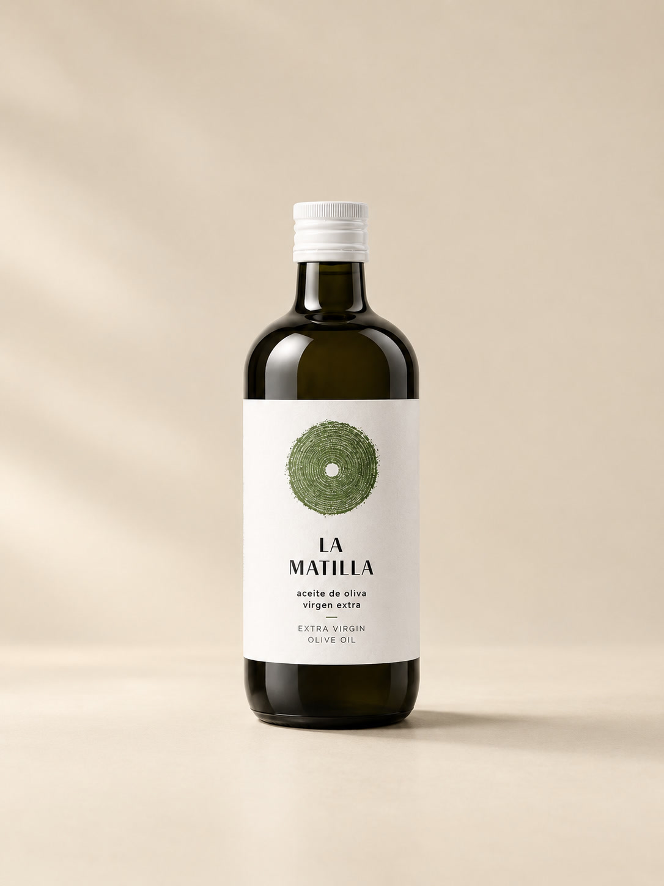

Huile d'olive vierge extra
Arbequina.
Fruitée et vive, avec des notes d'herbe fraîche.
Découvrir
↓

Arbequina
Première récolte.
Pomme verte, amande, un léger piquant.
Découvrir
↓
Picual & Arbequina
Coupage.
Ronde et équilibrée, pour tous les jours.
Découvrir
↓
Hojiblanca · Arbosana · Picual
Le coffret.
Trois huiles à goûter côte à côte.
Découvrir
↓
Arbequina · Pressée à froid
Le grand format.
Le litre, pour la cuisine de tous les jours.
Découvrir
↓